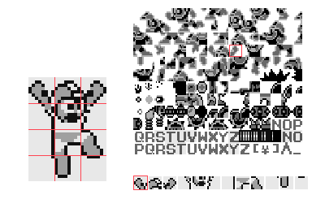

/posts/gameboy-dma
; A brief introductionThe purpose of this article is to explain DMA transfers on the Gameboy, specifically how to use them. We will be going over some assembly code examples, as well as a bit of disassembled code from one of my favorite Gameboy games, Megaman. By the end of this article you should have a strong understanding of not only what a DMA transfer is, but how to use them in your own homebrew games.
This article does not cover the basics of Gameboy homebrew, and it assumes you have at least a little understanding of assembly and/or the Gameboy, etc. Many topics are only glanced at because teaching them is out of the scope of this article, other such articles exist and I recommend doing your research beforehand. Should anyone feel stuck or confused about anything, feel free to contact me on IRC or twitter and I will help to the best of my ability.
The code in this article is written specifically for RGBASM. The tools used are gb-convert, my own tool to convert images to data supported by the Gameboy. And various reverse-engineering tools such as Radare2, to disassemble the Megaman rom.
Using the all-mighty Gameboy pandoc as a reference, I recommend you do the same.
If you require a working example of the code covered in this article, feel free to check out my most recent homebrew game Exeman on github, which I wrote for Ludumdare 38.
So without further ado, lets get started..
; OAM and its relation to spritesIf you have toyed with game development in the past, chances are you know what a “sprite” is. For those unfamiliar with the term, a sprite is essentially just a 2D image of arbitrary size, in the context of games it is generally used to refer to entities, moving objects, etc.
The same is true for the Gameboy, with one exception being the size of the image. On the Gameboy sprites are limited to two possible sizes, one being 8x8, the other being 8x16. Pretty small right? Due to these limitations you have to form larger sprites by stitching numerous small sprites together.
The sprites actually get their image from a larger image split up into either 8x8 or 8x16 “tiles”, we will refer to this as a “tile map”. Every sprite has a number associated with it which corresponds to one of the tiles in our tile map.
To render sprites we need to utilize what is referred to as the “OAM”, or “Object Attribute Memory”. All this really is, is a memory location that is used to store the information of each sprite. On the Gameboy the OAM is a 160-byte long chunk of memory, and each sprite takes up 4 bytes which leaves just enough room for exactly 40 sprites.
So what are these 4 bytes for? Well, those 4 bytes are used to store some information about each sprite. The information being the following:
1: Y location
2: X location
3: Tile number
4: FlagsThe first two bytes store the position of our sprite in the game world. The third byte stores the tile number which corresponds to a tile in our tile map. And the fourth byte stores numerous attributes in its bits. Those attributes are as follows:
7: Render priority
6: Y flip
5: X flip
4: Palette number (GB Color only)
3: VRAM bank (GB Color only)
2: Palette number bit 3 (GB Color only)
1: Palette number bit 2 (GB Color only)
0: Palette number bit 1 (GB Color only)Knowing this, lets take a look at Megaman. On the left we have Megaman as seen in the game world. At the top right we have our tile map, and at the bottom right we have the OAM sprites. Megaman consists of 12 sprites in total. This number could be reduced to 6 if it were to use 8x16 tiles. Also note that Megaman is facing the opposite direction of the tiles. This is done by setting the 5th bit in the flags attribute to 1, which enables mirroring on the X axis.

So we know we need 4 bytes per sprite, but how would that look in code? Well here’s a quick example. I use a separate file for my OAM variables to keep things organized. We’ll define these bytes somewhere in work RAM because they are going to get changed a lot while the game is running.
SECTION "OAM Vars",WRAM0[$C100]
megaman_sprites: DS 4*12
megaman_bullets: DS 4*4As you can see, we are defining these in WRAM0, which is work RAM, at address $C100 onwards. Because Megaman consists of 12 sprites, and each sprite requires 4 bytes, we reserve 48 bytes. We also reserve enough space for 4 projectiles. Setting these bytes to a specific value is nice and easy, lets set the position of the first bullet to X 32 and Y 24.
; byte 1 is the Y position
ld a,24
ld [megaman_bullets],a
; byte 2 is the X position
ld a,32
ld [megaman_bullets+1],aPretty straightforward huh? So far we have stored the bytes for the sprites in work RAM not OAM, and until we get those bytes to the OAM nothing will happen. So why don’t we just define these bytes in OAM? Well the thing with OAM is that much like VRAM, we can not access it while the display is updating (Which is a lot of the time!). This is where the so-called “DMA” comes into play.
; DMA transfers, and how to use themSo we know what the OAM is, we know we need 4 bytes per sprite, and that larger sprites are comprised of numerous smaller ones. We’ve got the OAM sprite data stored in RAM, but now we need to get them to OAM. Manually accessing the OAM is impossible while the display is updating, and as this is most of the time accessing it manually just isn’t an option.
This is where DMA, or “Direct Memory Access” steps in. DMA transfers copy data from ROM or RAM to the OAM in a timely manner. Getting these to function takes a little bit of work and understanding. There are a few quirks we need to learn and work around. Most notably, the CPU can only access HRAM (which is memory between locations $FF80 - $FFFE) while a DMA transfer is taking place. On top of that DMA transfers take roughly 160 microseconds so we’re going to need to do something interesting to make this work.
First off, lets go over the code required to make a DMA happen. To do so we need to write some data to a location in memory, this location is actually a register and it resides at $FF46. As soon as anything is written to this location, a DMA transfer will begin. We also need to specify a location for the DMA transfer to copy data from, and the location we want is $C100, which is where we have stored our OAM bytes. The way to specify this is by loading the upper half of the address into the DMA register. Because the register is a single byte we can not give it our entire address $C100, which is two bytes. So we give it the upper half $C1, and the second half defaults to $00 leaving it with the address $C100.
Lets see what a DMA transfer would look like in assembly.
; first we load $C1 into the DMA register at $FF46
ld a, $C1
ld [$FF46], a
; DMA transfer begins, we need to wait 160 microseconds while it transfers
; the following loop takes exactly that long
ld a, $28
.loop:
dec a
jr nz, .loop
retSo, we load $C1 into the DMA register which is at $FF46, the DMA transfer begins immediately and we wait 160 microseconds for it to finish. Pretty simple huh? If only life was that easy..
As I mentioned before, while the DMA transfer is in progress the CPU can only access HRAM, as the above subroutine would reside in ROM this would simply not work. So we need a workaround for this, and as it turns out one exists thats not overly difficult to implement. What we need to do is copy the above subroutine from ROM where it resides, into HRAM. Along with this DMA subroutine, we are also going to need one to copy it into HRAM.
To make life a little less difficult for ourselves, we are going to assemble the DMA subroutine above and store it as a bunch of hex numbers in our ROM. I’m going to save you some time and hassle and do that part for you.
DMA_COPY:
; load de with the HRAM destination address
ld de,$FF80
; whats this? read on..
rst $28
; the amount of data we want to copy into HRAM, $000D which is 13 bytes
DB $00,$0D
; this is the above DMA subroutine hand assembled, which is 13 bytes long
DB $F5, $3E, $C1, $EA, $46, $FF, $3E, $28, $3D, $20, $FD, $F1, $D9
retLooks a little confusing, doesn’t it? At first glance this subroutine is pretty unintuitive so I’ll break it down for you.
First, we load de with the destination address for our copy subroutine, which is HRAM, $FF80. Next is this weird “rst” opcode, for those unfamiliar the Gameboy has a limited number of special subroutines that reside at the beginning of the ROM. These subroutines are known as a restart/interrupt vector table. Some of them are called when certain things meet a set condition. For example one such subroutine is called when a so called “V-Blank” occurs, which is right after the display has finished updating for that frame. What resides in these subroutines is down to you. We are going to take advantage of these and put our copy subroutine into one. The reason for this is that a “call” opcode takes 3 bytes, while a “rst” opcode takes 1, essentially it is a little bit faster.
After that we have two bytes, $00 and $0D. We use these to tell our copy subroutine how much data we want to copy, which in this context is 13 bytes, or $000D.
Following those two bytes, we have 13 bytes. Those bytes are the DMA subroutine we covered earlier hand assembled into their hexadecimal opcode numbers. This just makes copying them a little easier.
For those of you wanting to confirm that those 13 bytes are actually the above DMA subroutine, you can do so using the Radare2 tool “rasm2”. Here’s how:
$ rasm2 -a gb -d "F5 3E C1 EA 46 FF 3E 28 3D 20 FD F1 D9"So now that we have that out of the way, we need to write our copy subroutine that will reside in the reset vector table at $28. I have the following code defined in the file that also defines my header contents.
; copy x-bytes to [de]
SECTION "Copy Data",ROM0[$28]
COPY_DATA:
; pop return address off stack into hl
pop hl
push bc
; here we get the number of bytes to copy
; hl contains the address of the bytes following the "rst $28" call
; put first byte into b ($00 in this context)
ld a,[hli]
ld b,a
; put second byte into c ($0D in this context)
ld a,[hli]
ld c,a
; bc now contains $000D
; hl now points to the first byte of our assembled subroutine (which is $F5)
; begin copying data
.copy_data_loop
; load a byte of data into a
ld a,[hli]
; store the byte in de, our destination ($FF80 in this context)
ld [de],a
; go to the next destination byte, decrease counter
inc de
dec bc
; check if counter is zero, if not repeat loop
ld a,b
or c
jr nz,.copy_data_loop
; all done, return home
pop bc
jp hl
retiSo to go over it again, this is a subroutine that resides at the top of the ROM in one of the reset vectors, specifically $28. First we pop the top of the stack into hl, the reason for this is that the top of the stack is currently the return address, which is the byte right after “rst $28”. hl now contains that address and we use this to first get the number of bytes we want to copy. We load the first byte into b which is $00, at the same time the “hli” opcode increase hl to the following byte, and we store that byte in c, which is $0D. Now bc contains the number of bytes we want to copy.
Now the copy loop begins, first we load a byte of the data into a and increase hl to the next byte. We then load a into de, our destination, and increase de to the next destination byte and decrease bc, our counter. We then check to see if our counter bc is at zero, if it is not we loop again copying the next byte, if it is we are all done and return to the caller.
Now we have those subroutines out of the way, we can implement them into our game loop. The first thing we want to do is call our “DMA_COPY” subroutine, we only want to call this once as the assembled DMA subroutine will reside in HRAM for the remainder of the game. After this the game loop begins, now we need to call the subroutine from HRAM. We want to do this every frame so as to keep the OAM updated with the latest information about or sprites. Here’s what that code might look like:
SECTION "Program Start",ROM0[$150]
START:
; *enable everything here*
; move DMA subroutine to HRAM
call DMA_COPY
.game_loop:
; wait for the display to finish updating
call WAIT_VBLANK
; update megaman and the OAM bytes
call MEGAMAN_UPDATE
; call the DMA subroutine we copied to HRAM
; which then copies the bytes to the OAM and sprites begin to draw
call $FF80
jp .game_loopAnd, hey presto, its done! Suddenly its less daunting once you take it apart bit by bit huh?
For the sake of cementing the concept I want to briefly go over the use of DMA transfers in commercial games and take a peek at the code behind it. While the code will be very much the same as ours I think its interesting to take apart a commercial game made by professionals and see just how similar our is to theirs.
; Cracking open Megaman.gbSo we have the Megaman ROM open in our favorite disassembler, the first thing we will need to do is locate either the DMA subroutine, or a subroutine that copies it to HRAM. First I’m going to do a search for DMA register and see what we can find. Doing so brings up this:
ROM:15E0 ld a, $C0
ROM:15E2 ld [$FF46], a
ROM:15E4 ld a, $28
ROM:15E6 loc_15E6:
ROM:15E6 dec a
ROM:15E7 jr nz, loc_15E6
ROM:15E9 retHuh, that appears to be a DMA transfer subroutine just like ours. They are using the location $C000 for OAM data. Lets see if we can find the subroutine that copies this to HRAM.
Getting the address of the first byte for the above assembly code and searching for it brings up the following:
ROM:15D2 ; ========== S U B R O U T I N E ==========
ROM:15D2 sub_15D2:
ROM:15D2 ld c, $80
ROM:15D4 ld b, $A
ROM:15D6 ld hl, $15E0
ROM:15D9 loc_15D9:
ROM:15D9 ldi a, [hl]
ROM:15DA ld [c],a
ROM:15DB inc c
ROM:15DC dec b
ROM:15DD jr nz, loc_15D9
ROM:15DF ret
ROM:15DF ; End of function sub_15D2At a glance, that does indeed look like a subroutine that copies something. Whats odd is that it appears to be copying to the address in C, which starts at $80?
Obviously its not copying to the address $80, that wouldn’t make any sense. It looks like its actually a slightly different opcode and my disassembler just isn’t making note of it. Checking out the hex dump for the address that contains “ld [c],a” gives us $E2.
Giving this hexadecimal number to rasm2 produces the expected output.
$ rasm2 -a gb -d "E2"
$ "ld [0xff00 + c], a"So it appears this subroutine is copying the DMA subroutine at $15E0, to HRAM at $FF80. This method is perhaps a little more eloquent than ours as it uses less registers and generally less code overall. Though it isn’t using a reset vector subroutine like we are.
Not much to look at, but its interesting making the comparison and seeing how it was done in the commercial world. Disassembling commercial games is often a good opportunity to learn something new and get insight into different ways to approach a problem.
; Final notesI hope by this point you have a firm understanding of OAM, DMA, and how to implement it into your own projects. The reason for this article is that while most other topics on Gameboy homebrew are pretty well covered, I couldn’t personally find a lot of information on DMA transfers and struggled for a little bit. Hopefully this helps someone avoid the difficulties I had with DMA transfers.
If you find yourself stuck, confused, or notice something wrong in this article feel free to contact me via IRC or Twitter. Contributions and fixes are more then welcome and I look forward to perhaps doing more articles like this in the future.
o7